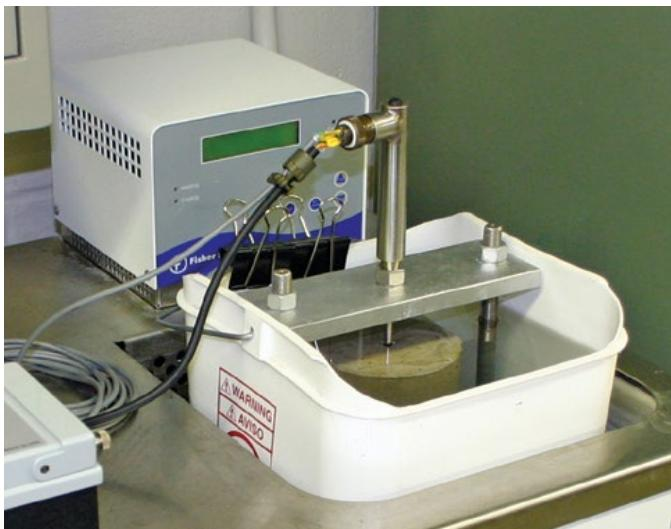
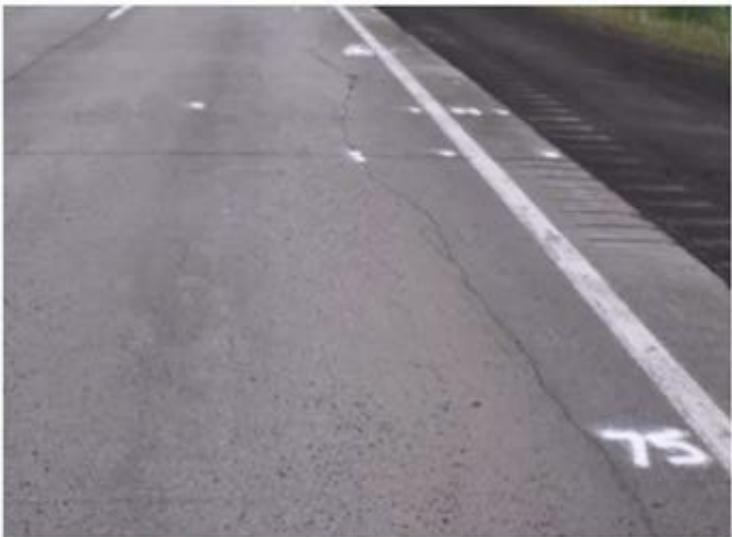
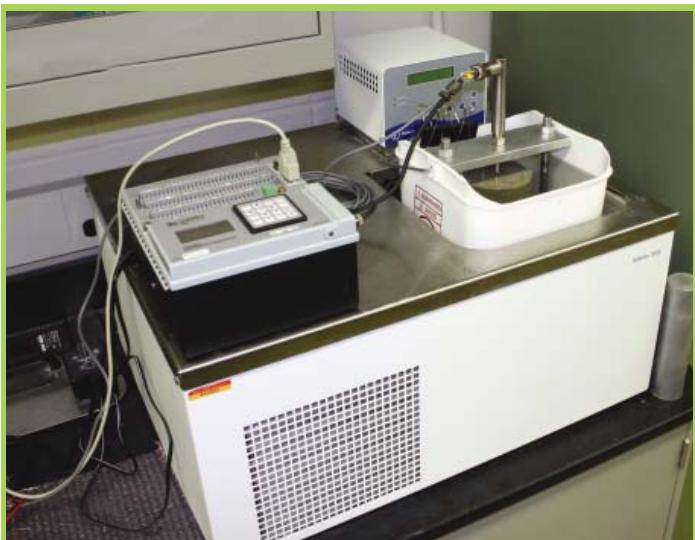
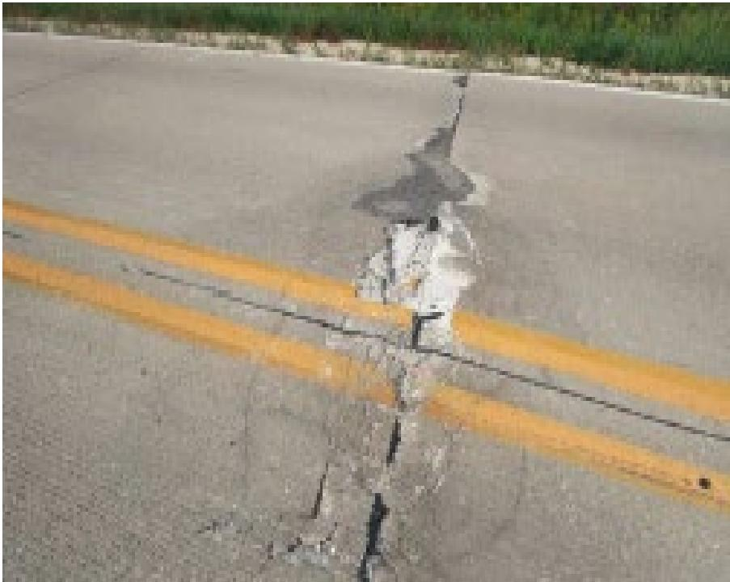

Thermal Expansion Measurement
Thermal expansion measurement is the determination of a concrete material’s coefficient of thermal expansion (CTE) by testing representative specimens in accordance with AASHTO T 336 (specimens prepared per ASTM C42) and recording dimensional change over controlled temperature cycles [1][2][3]. The CTE quantifies the length or volume change per degree of temperature change, a property dominated by the aggregate content—aggregates constitute roughly 60–75 % of the mix and their mineralogy (e.g., low‑expansion limestone versus high‑expansion quartzite) largely sets the composite value [1][2][3]. Providing a numeric CTE enables engineers to incorporate thermal strain into pavement design, durability models, overlay thickness selection, joint spacing and reinforcement decisions, because variations in CTE directly affect predicted expansion‑induced stresses, cracking risk, and joint integrity [1][2][3].
Sources (4)
Material purpose and applicability
Thermal expansion measurement is the determination of a concrete material’s coefficient of thermal expansion (CTE), obtained by testing representative specimens in accordance with AASHTO T 336. The CTE quantifies how much the concrete changes in length or volume for each unit change in temperature, a property that is dominated by the aggregate content. By providing a numeric CTE value, engineers can incorporate it into pavement design calculations and durability models to anticipate volumetric movements, select appropriate overlay thicknesses, set joint spacing and reinforcement, and protect joint integrity; an increase in measured CTE may render an originally specified overlay insufficient, requiring a thicker design to maintain performance. [1][2][3]
[1] — Ch. 3 (p. 91), Ch. 6 (p. 160), Ch. 9 (p. 287); [2] — 1. Introduction (p. 39); [3] — Ch. 4 (pp. 267–280), Ch. 18 (p. 387), Ch. 19 (p. 495)
Composition and characteristics
The thermal‑expansion measurement of concrete pavement is fundamentally governed by its constituent makeup. Aggregates constitute roughly sixty to seventy‑five percent of the concrete volume, so their mineralogy and proportion set the composite coefficient of thermal expansion (CTE). Consequently, the CTE of the aggregate particles dominates the overall CTE of the slab. Low‑expansion carbonate aggregates such as limestone or marble produce the smallest dimensional change, while siliceous aggregates like quartzite yield higher values. When an overlay incorporates a different coarse aggregate, its CTE can differ from that of the existing pavement; for example, an overlay may exhibit a CTE of 6.1 ×10⁻⁶/°F compared with 4.5 ×10⁻⁶/°F for the underlying concrete. The paste‑to‑aggregate ratio, cement content, water‑to‑cementitious material (w/c) ratio, concrete age, ambient humidity and the temperature range experienced also influence the measured expansion. In practice, CTE values for hydraulic‑cement concrete typically fall between 4 ×10⁻⁶ and 7.5 ×10⁻⁶ per degree Fahrenheit, with an average around 5.5 ×10⁻⁶/°F. Standard testing follows AASHTO T 336 (specimens prepared per ASTM C42) to obtain a reliable CTE for design, quality‑control and joint‑spacing decisions. [1][2][3]
[1] — Ch. 3 (p. 91), Ch. 6 (p. 160); [2] — 1. Introduction (p. 40); [3] — Ch. 4 (pp. 244–280), Ch. 18 (p. 387), Ch. 19 (p. 495)
The guides agree that variations in concrete composition, source material, processing, and proportioning have a direct and often dominant influence on the measured coefficient of thermal expansion (CTE) used to predict pavement behavior. Because aggregates constitute most of a concrete slab’s volume, any change in their composition, source or type directly alters the concrete’s coefficient of thermal expansion. Consequently, the aggregate’s intrinsic CTE—lower for limestone or marble and higher for siliceous quartzite—governs the composite response, with high‑CTE aggregates causing greater expansion during warm periods and sharper contraction when temperatures fall, which raises the risk of curling, blowups, and cracking. Raising the CTE from about 4.5 ×10⁻⁶/°F to 6.1 ×10⁻⁶/°F increases predicted cracking rates dramatically; when only an overlay’s CTE is raised while the underlying concrete remains at the lower value, the forecasted cracked‑slab percentage more than doubles, prompting designers to increase overlay thickness to preserve structural integrity. The proportioning of aggregate relative to cement paste—along with water‑to‑cementitious material ratios and any processing differences—shifts the overall CTE, so selecting lower‑CTE carbonate aggregates or adjusting their blend ratio can mitigate temperature‑induced movements and reduce distress potential. [1][2][3]
[1] — Ch. 3 (p. 91), Ch. 6 (p. 160); [2] — 1. Introduction (pp. 39–40); [3] — Ch. 4 (pp. 244–280), Ch. 18 (p. 387)
Key material properties
“Thermal‑expansion measurement in concrete pavement is governed by a set of interrelated properties. The dominant thermal property is the coefficient of thermal expansion (CTE), defined as “A material’s CTE is a measure of how much the material changes in length (or volume) for a given change in temperature.” Because aggregates constitute 60 %–75 % of the mix, “Because aggregates make up a majority of a concrete’s volume, the CTE of the aggregate particles will dominate the CTE for the concrete overall,” and “aggregate (particularly coarse aggregate) has a large influence on CTE.” Low‑expansion limestone or marble aggregates produce the lowest values, whereas siliceous aggregates yield higher values. Physical composition also matters: “Physical composition matters because the relative amounts of paste versus coarse aggregate dictate how much of the slab’s volume participates in thermal movement,” and surface color can modify temperature gradients that drive expansion.
Mechanical characteristics affect how the material accommodates thermal strain. “Mechanical factors such as cement content and the water‑to‑cement (w/c) ratio modify the concrete’s stiffness and moisture state,” and “shrinkage behavior influences dimensional changes after placement and interacts with CTE‑driven movements at joints.”
Chemical aspects are linked to both thermal response and shrinkage. The heat released during hydration “the heat of hydration released during curing, interact with aggregate behavior to affect measured expansion, especially in early ages,” while the water‑to‑cementitious material ratio governs cement chemistry that controls both thermal response and shrinkage magnitude.
Thermal considerations beyond CTE include the anticipated temperature range, gradients across slab thickness, concrete age, and ambient relative humidity, all of which further dictate the magnitude and timing of expansion or contraction. Precise measurement and control of CTE are critical for design: “CTE is considered a critical design variable for bonded overlays of existing concrete pavements,” and changes in CTE can invalidate an overlay thickness, as illustrated by “If the CTE for this example is changed from 4.5 to 6.1 (10-6/°F) for both the overlay and existing pavement layers, the original 2 in. thick overlay design would no longer be valid.” [1][2][3]
[1] — Ch. 3 (p. 91), Ch. 6 (p. 160); [2] — 1. Introduction (pp. 39–40); [3] — Ch. 4 (pp. 244–280), Ch. 18 (p. 387), Ch. 19 (p. 495)
The coefficient of thermal expansion (CTE) quantifies how much an aggregate or concrete changes in length or volume per degree of temperature change; The thermal‑expansion property is quantified by the coefficient of thermal expansion (CTE), reported in micro‑units per degree Fahrenheit (10⁻⁶/°F). Across the guides, the CTE is measured using the standard test method AASHTO T 336, with specimens prepared according to ASTM C42 and subjected to controlled temperature cycles while dimensional change is recorded. The resulting values are used to classify materials—aggregates are grouped by typical linear CTE values (limestone and marble having the lowest expansions) and overlay designs assign specific CTEs (e.g., 6.1 × 10⁻⁶/°F for a new overlay versus 4.5 × 10⁻⁶/°F for existing concrete)—enabling engineers to compare and predict pavement performance. [1][2][3]
The following figure illustrates the process for measuring the coefficient of thermal expansion.

Laboratory apparatus for measuring the coefficient of thermal expansion of concrete specimens. [1]The image displays a testing setup consisting of a white control unit connected to a measurement probe positioned over a cylindrical specimen submerged in a liquid bath within a white container.
[1] — Ch. 3 (p. 91), Ch. 6 (p. 160); [2] — 1. Introduction (p. 40); [3] — Ch. 4 (pp. 262–280), Ch. 18 (p. 387), Ch. 19 (p. 495)
Behavior and mechanisms
The thermal expansion behavior of concrete pavements is governed primarily by the aggregate component, which dominates the coefficient of thermal expansion (CTE). Across the guides it is noted that “Because aggregates make up a majority of a concrete’s volume, the CTE of the aggregate particles will dominate the CTE for a concrete.” Consequently, typical values cluster around an average of 5.5 × 10⁻⁶ per °F, with observed ranges from 3.2 to 7.0 × 10⁻⁶/°F, producing “a length change of about 2/3 in. for 100 ft of concrete subjected to a rise or fall of 90°F.” The measured CTE is sensitive to temperature range and relative humidity; higher temperatures cause lengthening while lower temperatures cause shortening, and moisture conditions influence the measured value.
When temperature‑induced expansion occurs, panels develop load transfer even without dowels: “Even without dowels, rising temperatures expand the pavement panels providing load transfer but the load transfer is lost when the temperature drops.” Aggregates with a high CTE amplify this effect, whereas carbonate aggregates, being less thermally expansive, help mitigate volumetric changes.
The guides also agree that an increase in CTE markedly degrades the performance of bonded overlays. A rise from 4.5 to 6.1 × 10⁻⁶/°F “markedly worsens the performance of bonded overlays,” driving the predicted proportion of cracked slabs up to nearly 30 % at a 95 % reliability level and rendering a 2‑in. overlay thickness insufficient, thereby requiring a thicker design.
Thus, under service conditions the concrete’s thermal response is a function of aggregate type, temperature swing, humidity, and the presence or absence of mechanical load‑transfer devices; higher CTE values increase expansion‑induced stresses, crack potential in overlays, and transient load transfer, while lower‑CTE aggregates reduce these adverse effects. [1][2][3]
[1] — Ch. 6 (p. 160); [2] — 1. Introduction (p. 39); [3] — Ch. 4 (p. 244)
Across the guides, the behavior of thermal‑expansion measurement in concrete pavement is controlled by three interrelated mechanisms.
Physical mechanisms – The response is rooted in the material’s coefficient of thermal expansion (CTE), defined as “A material’s CTE is a measure of how much the material changes in length (or volume) for a given change in temperature.” Because aggregates dominate the mix, “Because aggregates make up a majority of a concrete’s volume, the CTE of the aggregate particles will dominate the CTE for the concrete overall” and “aggregate type has the greatest influence because aggregates account for about 60 to 75 percent of concrete by volume.” Temperature gradients across a slab produce differential length change that appears as curling: “Curling is a result of a temperature gradient in the concrete slab.” When an overlay uses a different aggregate, the guides note that “the overlay design is analyzed for a CTE value different from the original concrete,” creating differential strain that can lead to cracking.
Chemical mechanisms – Internal heat generated during cement hydration adds another source of temperature change: “Temperature changes may be caused by environmental conditions or by the heat of hydration.” Paste chemistry also influences CTE, as “Thermal expansion and contraction of concrete (that is, expansion and contraction related to temperature change) vary with factors such as aggregate type, cement content, w/cm ratio, temperature range, concrete age, and relative humidity.”
Mechanical mechanisms – When thermal strain is restrained by joints or subgrade, it converts to stress that affects load transfer: “Even without dowels, rising temperatures expand the pavement panels providing load transfer but the load transfer is lost when the temperature drops.” The magnitude of this strain is captured by standard laboratory procedures in which “Samples are loaded into the CTE frame (Figure 19.32) and the software runs tests on the sample to determine the CTE.” These stresses directly influence joint durability and cracking potential: “The expansion and contraction of concrete due to temperature changes can impact the durability of joints and the risk of cracking in concrete pavements.”
Thus, physical aggregate‑driven CTE and temperature gradients, chemical heat of hydration and paste composition, and mechanical restraint‑induced stresses together govern thermal‑expansion measurement behavior. [1][2][3][4]
[1] — Ch. 3 (p. 91), Ch. 6 (p. 160); [2] — 1. Introduction (p. 40); [3] — Ch. 4 (pp. 244–280), Ch. 18 (p. 387), Ch. 19 (p. 495); [4] — Ch. 7 (p. 106)
Durability and deterioration
The cyclic expansion and contraction of concrete generated by daily and seasonal temperature changes produce thermal stresses that act on pavement joints. When joint geometry—layout, spacing, or width—is not consistent with design intent, these stresses become primary damage processes, degrading joint integrity, causing faulting, opening‑and‑closing of joints, blowouts, and initiating slab cracking that compromises structural durability. The guides note that “Thermal expansion/contraction is a factor that should be considered in the design phase” and that “The expansion and contraction of concrete due to temperature changes can impact the durability of joints and the risk of cracking in concrete pavements.”
A high coefficient of thermal expansion (CTE) amplifies these mechanisms. “Coefficient of Thermal Expansion (CTE): Aggregates with high CTE properties cause contraction and expansion of panels due to annual and daily temperature swings,” generating tensile stresses, loss of load‑transfer efficiency—especially when mechanical connectors such as dowels are absent—and increased potential for curling, roughness, and fatigue cracking. The material factor most influencing temperature curling is “the concrete’s coefficient of thermal expansion (CTE) measured in accordance with AASHTO T 336,” and “All variables equal, concrete having a higher CTE value will have an increased potential for curling” as well as for “blowups.” Moreover, “CTE has a huge impact on the opening and closing of joints, and these impacts can lead to pavement distress.”
For bonded overlays, “CTE is considered a critical design variable for bonded overlays of existing concrete pavements.” An increase of CTE from 4.5 to 6.1 ×10⁻⁶/°F in both overlay and existing pavement renders the original design ineffective: “If the CTE for this example is changed from 4.5 to 6.1 (10-6/°F) for both the overlay and existing pavement layers, the original 2 in. thick overlay design would no longer be valid.” Predictive analysis shows that “AASHTOWare Pavement ME Design predicts slabs cracked to be 29.91% at 95% reliability with the change in concrete CTE,” and up to 56.86% when only the overlay CTE is altered. Adjusting overlay thickness restores acceptable reliability, illustrating that inaccurate CTE values or failure to accommodate them constitute a primary deterioration mechanism.
Consequently, durability concerns are mitigated by selecting aggregates with lower CTE, providing adequate joint provisions, monitoring joint geometry during construction, and adjusting overlay thickness or material properties to match the expected thermal movements. [1][2][3][4]
[1] — Ch. 9 (p. 287); [2] — 1. Introduction (pp. 39–40); [3] — Ch. 4 (pp. 244–280), Ch. 19 (p. 495); [4] — Ch. 7 (pp. 106–107)
“CTE is considered a critical design variable for bonded overlays,” and “The material factor that has the greatest impact on the development of temperature curling is the concrete’s coefficient of thermal expansion (CTE).” A higher CTE increases susceptibility: when “If the CTE for this example is changed from 4.5 to 6.1 (10-6/°F) for both the overlay and existing pavement layers, the original 2 in. thick overlay design would no longer be valid,” predicted cracking rates rise sharply (“slabs cracked to be 29.91% at 95% reliability with the change in concrete CTE,” “predicts 56.86% slabs cracked at 95% reliability”). Likewise, “Aggregates with high CTE properties cause contraction and expansion of panels due to annual and daily temperature swings,” and “concrete having a higher CTE value will have an increased potential for curling” as well as “All variables equal, concrete having a higher CTE value will have an increased potential for blowups.”
Conversely, susceptibility is reduced when low‑CTE materials are used. “Pure limestone aggregates produce concrete with the lowest CTE values, whereas concrete produced with siliceous aggregates such as quartzite have the highest CTE values,” and “Since carbonate aggregate mixtures are less thermally expansive, the designer should take this reality into consideration when a variety of coarse aggregates are available.” Keeping the overlay’s CTE close to that of the existing pavement “reduces this susceptibility,” and increasing thickness (“a 3 in. overlay is more suitable for this scenario”) further mitigates thermal strain.
Exposure conditions also affect risk. Darker or colored surfaces absorb more solar energy, creating larger temperature gradients: “The surface of darker concrete, particularly concrete that has been colored, will get hotter under direct sunlight and thus will have a higher positive temperature gradient.” Lack of mechanical load‑transfer devices amplifies the problem: “The CTE issue is a bigger problem for pavement without mechanical load transfer,” whereas appropriate jointing and dowels can accommodate movement even with a higher‑CTE mix (“as long as jointing and other design practices are such that the higher CTE value is accommodated”). [2][3]
[2] — 1. Introduction (pp. 39–40); [3] — Ch. 4 (pp. 244–280)
Material interactions and compatibility
Thermal‑expansion measurement in concrete reflects the combined response of its constituents, and the coefficient of thermal expansion (CTE) is most strongly governed by the type of aggregate because aggregates occupy roughly 60–75 % of the volume. Consequently, using low‑expansion limestone aggregates will lower the overall CTE compared with siliceous aggregates, while pure limestone aggregates produce the lowest CTE values and siliceous quartzite raises the CTE to its highest range. The interaction of the measured CTE with cement and binder properties is therefore indirect—through their contribution to mix proportions—but cement content, water‑to‑cement ratio and other mix factors also play secondary roles. The material factor that has the greatest impact on temperature‑induced curling is the CTE, which is dominated by the coarse aggregate because “as the volume of concrete is predominately aggregate, the aggregate (particularly coarse aggregate) has a large influence on CTE.” When all other variables are equal, a higher CTE increases the potential for blowups; however, high‑quality, long‑lasting concrete pavements are routinely produced with aggregates having a high CTE value as long as jointing and other design practices are such that the higher CTE value is accommodated. In overlay applications the same measurement is used to match the CTE of the new coarse aggregate to that of the existing base, ensuring dimensional compatibility and reducing interfacial stress. The composite’s overall thermal response also reflects paste‑to‑aggregate ratios and water‑to‑cementitious material (w/cm) ratios, because “comparing the relative proportions of paste and aggregate in the two materials” and “comparing the water to cementitious material (w/cm) ratio of the two materials” directly influences the measured CTE. Post‑construction verification is achieved by measuring CTE and shrinkage on cores taken from both overlay and pavement, confirming that the combined materials will expand and contract together without inducing cracking or delamination. [1][3]
[1] — Ch. 6 (p. 160); [3] — Ch. 4 (pp. 267–280), Ch. 18 (p. 387)
Influence of production and placement
The construction variations that most strongly dictate the long‑term response of concrete pavement to thermal expansion are those that alter the slab’s coefficient of thermal expansion and those that limit its ability to accommodate movement. Across the sources, aggregate selection is identified as the primary influence: because aggregates constitute the bulk of the mix, their coefficient of thermal expansion governs the composite CTE, with low‑expansion carbonates (e.g., limestone, marble) producing modest dimensional changes and high‑expansion siliceous aggregates (e.g., quartzite) leading to larger expansions and higher cracking risk. When an overlay introduces a different aggregate, the resulting CTE mismatch between overlay and existing slab can dominate performance, driving substantially higher predicted crack rates. A secondary but critical construction defect is improper joint provision; incorrect layout, spacing, or width prevents the slab from expanding freely, accelerating distress such as faulting or cracking over time. Surface coloration can affect temperature gradients, but its impact on long‑term thermal strain is comparatively minor relative to aggregate and joint considerations. [1][2][3][4]
The figure below illustrates how inadequate joint provision can lead to severe distress, such as longitudinal cracking.

Longitudinal cracking in pavement due to the lack of a longitudinal joint [3]The image displays a concrete pavement surface featuring a prominent, irregular crack running longitudinally along the lane.
[1] — Ch. 3 (p. 91), Ch. 6 (p. 160), Ch. 9 (p. 287); [2] — 1. Introduction (p. 40); [3] — Ch. 4 (pp. 244–267); [4] — Ch. 7 (p. 107)
Selection, specification, and improvement
Selection of thermal‑expansion measurement for concrete pavements is driven primarily by the coefficient of thermal expansion (CTE) of the materials involved. Designers first evaluate the CTE of the dominant aggregates because “When specifying how to measure thermal expansion for a concrete pavement, designers first evaluate the coefficient of thermal expansion (CTE) of the aggregates that dominate the mix, because those values control the overall concrete CTE.” Low‑CTE aggregates such as limestone or marble are preferred, as “Materials with the lowest CTE—such as limestone or marble—are preferred since they produce the smallest volumetric changes under temperature swings.” The criteria include aggregate type, cement content, water‑to‑cement ratio, anticipated temperature range, concrete age and relative humidity; these material factors “The dominant criteria are material factors that most affect CTE: aggregate type, cement content, water‑to‑cement ratio, anticipated temperature range, concrete age and relative humidity.” Given that aggregates constitute 60–75 % of the volume, “Since aggregates constitute 60–75 % of the volume, their CTE largely determines the concrete response and is therefore the primary design lever.” For bonded overlays, “CTE is considered a critical design variable for bonded overlays of existing concrete pavements in the AASHTO Pavement ME Design Guide,” and designers must verify that the CTE used in performance models reflects actual material properties; any deviation can invalidate an overlay thickness and require increased depth to meet crack‑prediction reliability: “Designers must verify that the CTE value used in the AASHTOWare Pavement ME model reflects the actual material properties; any deviation—e.g., changing the assumed CTE from 4.5 to 6.1 ×10⁻⁶/°F—invalidates a previously acceptable overlay thickness and forces an increase in section depth to meet crack‑prediction reliability targets.” Compatibility between new and existing pavement is also required: “Compatibility between the overlay and the existing pavement is another key criterion: when the same aggregate cannot be used, the overlay must be analyzed with a different CTE and its predicted cracking percentage and reliability are evaluated to decide whether adjustments such as greater thickness are required.” Measurement follows the standard AASHTO T 336 procedure, and designers compare the estimated CTE of overlay aggregates with that of the base concrete while also assessing paste‑to‑aggregate ratios and w/c ratios to ensure dimensional compatibility: “Designers therefore determine the CTE using the AASHTO T 336 test, compare the estimated CTE of any overlay’s coarse aggregate with the existing base concrete, and evaluate paste‑to‑aggregate and water‑cement ratios to ensure dimensional compatibility.” The chosen CTE must be matched to “The selected CTE is then matched to the anticipated temperature gradients and the capacity of joints or other design details to accommodate the predicted length change,” because joint performance governs durability: “When specifying thermal‑expansion measurement for concrete pavement, the guiding criteria focus on ensuring that the joint system can accommodate the anticipated movement.” Consequently, “Anticipated joint durability and crack susceptibility are the key criteria for selecting this measurement.” [1][2][3][4]
The following figure illustrates the specialized equipment used to conduct these critical thermal expansion measurements.

CTE testing equipment [4]The image displays a laboratory apparatus consisting of a temperature-controlled bath and an electronic measurement device used to determine the coefficient of thermal expansion (CTE).
[1] — Ch. 3 (p. 91), Ch. 6 (p. 160); [2] — 1. Introduction (pp. 39–40); [3] — Ch. 4 (pp. 244–280), Ch. 18 (p. 387); [4] — Ch. 7 (pp. 106–107)
Ensuring that the pavement’s joint layout, spacing, and joint width are built exactly as specified in the design provides the primary means of controlling thermal‑expansion related problems; by treating these joint parameters as critical quality‑control checkpoints during construction, the adverse effects of concrete expansion and contraction can be mitigated. To keep thermal‑expansion effects from compromising pavement performance, the construction team should verify that joints are laid out and spaced exactly as specified and that each joint is cut to the required width; these checks serve as the primary quality‑control step recommended for mitigating the weaknesses associated with thermal expansion.
When an overlay has a higher coefficient of thermal expansion than the underlying concrete, increasing the overlay thickness to three inches adds sufficient stiffness and volume to absorb the mismatch, thereby improving performance and mitigating the weakness associated with CTE differences.
Since carbonate aggregate mixtures are less thermally expansive, the designer should take this reality into consideration when a variety of coarse aggregates are available. Using these lower‑CTE, carbonate‑based coarse aggregates directly reduces the magnitude of temperature‑induced movement in concrete pavement panels, improving the reliability of thermal‑expansion measurements and limiting cracking. In overlay situations, match the estimated coefficient of thermal expansion (CTE) of the selected overlay coarse aggregate to that of the existing concrete, and adjust the paste‑to‑aggregate content and water‑to‑cementitious (w/cm) ratio so the two layers remain dimensionally compatible.
After construction, CTE and shrinkage values can be measured directly using concrete beams or cylinders cut from the concrete overlay and existing concrete pavement using equipment and protocols described in AASHTO T 336‑11; this quality‑control step mitigates uncertainties in predicted thermal behavior. [1][2][3][4]
[1] — Ch. 9 (p. 287); [2] — 1. Introduction (p. 40); [3] — Ch. 4 (p. 244), Ch. 18 (p. 387); [4] — Ch. 7 (p. 107)
Performance evaluation and implications
The material’s coefficient of thermal expansion (CTE) is established primarily through laboratory testing using the AASHTO T 336 protocol. This test quantifies the CTE of both the aggregate and the hardened hydraulic cement concrete, providing the numeric values that feed into pavement design calculations and thermal‑stress models. Designers also verify predicted CTEs by comparing overlay aggregate values with those of the existing slab, using mixture records or petrographic examination, and may re‑measure cores after construction following the same AASHTO procedure.
Field evidence is obtained from longitudinal roughness monitoring. Long‑term International Roughness Index (IRI) data collected on test sections—such as a 17‑year record from an Arizona SPS‑2 segment—captures daily temperature‑induced curvature and isolates it from permanent warping. The IRI fluctuations associated with thermal curling are quantified, and after removal of curvature effects the remaining baseline remains stable over many years.
Together, laboratory CTE measurements, comparative aggregate assessments, and multi‑year IRI monitoring constitute the performance evidence used to evaluate thermal‑expansion behavior in concrete pavements. [1][3]
[1] — Ch. 3 (p. 91), Ch. 6 (p. 160); [3] — Ch. 4 (pp. 262–267), Ch. 18 (p. 387), Ch. 19 (p. 495)
“A material’s CTE is a measure of how much the material changes in length (or volume) for a given change in temperature.” Because aggregates constitute most of a concrete mix, “the coefficient of thermal expansion (CTE) governs the overall expansion‑contraction behavior of the pavement slab,” and “as the volume of concrete is predominately aggregate, the aggregate (particularly the coarse aggregate) has a large influence on CTE.” Typical values range from 3.2 to 7.0 × 10⁻⁶ /°F (average about 5.5 × 10⁻⁶ /°F), so a 90 °F swing can produce “about 2/3 in. for 100 ft of concrete,” generating temperature‑induced strains that “promote cracking, joint faulting, and loss of durability.” High‑expansion aggregates such as those with “high CTE properties cause contraction and expansion of panels due to annual and daily temperature swings,” increase the potential for curling and loss of load transfer when dowels are absent. Consequently, the guides require designers to incorporate measured CTE values into thermal modeling, select low‑expansivity aggregates (e.g., carbonate blends), size joints, and determine slab or overlay thicknesses that can accommodate the expected movements. When the CTE is increased, design models predict substantially higher cracking rates—for example, changing CTE from 4.5 to 6.1 ×10⁻⁶/°F “predicts 56.86% slabs cracked at 95% reliability,” and the original 2‑in. overlay becomes invalid, prompting a recommendation for a thicker (e.g., three‑inch) overlay or adjusted slab thickness based on temperature differentials. During construction, “joint layout, spacing, and width” must be verified to conform with design specifications, and concrete placed must meet the specified CTE values. Post‑construction, maintenance programs monitor joint condition, opening/closing cycles, curvature‑related roughness, and thermal‑induced cracking so that corrective actions can preserve performance and extend service life. [1][2][3][4]
The figure below illustrates how this thermal expansion can cause compression at a transverse joint when adjacent joints fail to open.

Compression at transverse joint due to slab expansion and adjacent joints not opening Matt Zeller, Concrete Paving Association of Minnesota [3]The image displays a longitudinal crack in a concrete pavement that has caused significant vertical displacement and spalling along the centerline.
[1] — Ch. 3 (p. 91), Ch. 6 (p. 160), Ch. 9 (p. 287); [2] — 1. Introduction (pp. 39–44); [3] — Ch. 4 (pp. 244–280), Ch. 18 (p. 387), Ch. 19 (p. 495); [4] — Ch. 7 (pp. 106–107)